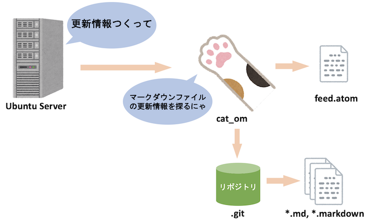
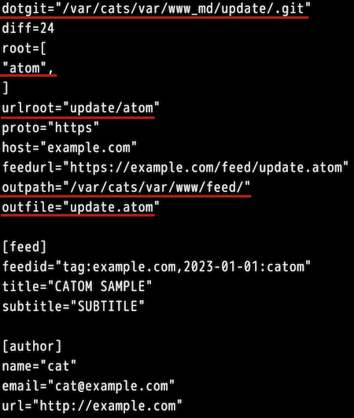
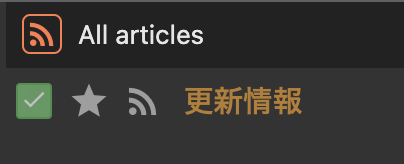

おはようございます。こんにちは。こんばんは。ふぇにっくちゅん です。
本記事では、cats_dogs アプリをカスタムするツールである cat_om について紹介します。
このツールは、cats_dogs アプリを利用して公開された、Markdown ファイルの更新状況を受け取ることができます。
cat_om から、Markdown ファイルの更新状況を受け取る仕組みの概要を説明します。
cat_om は Atom Feed を生成します。
つまり、閲覧者は Feed Client を利用して更新状況を受け取ることができます。
cat_om を利用する際には、Markdown ファイルが git で管理されていることが前提となります。
つまり、cat_om は git log から Web サーバ上で管理されている Markdown ファイルの更新状況を判定します。
そして、更新情報を Feed として表現します。

この生成された Feed を、Web サーバ上で公開します。
すると、閲覧者は自身の Feed Reader アプリから更新の通知を受け取ることができます。
ここでは、設定方法を説明します。
まずは cat_om の使い方にある build.sh を実行します。
作成された cat_om のバイナリファイルを、適当な位置に配置します。
例えば、デモの環境であれば、/var/cats/bin/ のディレクトリに置くこととします。
次に設定ファイルです。
設定ファイルの置き場所は、/var/cats/etc/ のディレクトリに置くとします。
設定ファイルのサンプルは、こちらから確認できます。
また、設定ファイルの説明はこちらに記載しています。
設定ファイルの具体的な値に関しては、以降の例で説明します。
あとは cat_om が作成した Feed 情報を配置する場所を作成します。
/var/cats/var/www/ のディレクトリの中に feed というディレクトリを作成します。
/var/cats/var/www/feed/ の中に Feed の情報が配置されます。
cat_om は、Markdown ファイルの更新情報を得るために、git のリポジトリを参照します。
動画を最後まで進めた方は、/var/cats/var/ や /var/cats/bk が git によって管理されています。
ここでは、説明が複雑にしないために /var/cats/var/ が git で管理されていない単なるディレクトリであることとします。
本記事の前提として、/var/cats/var/www_md/update/ のディレクトリに、Markdown ファイルを更新した情報を記載したファイルを配置するとします。
このディレクトリの中で、git init と実行しておいてください。
このコマンドで、update ディレクトリ以下のファイルが git で管理されるようになります。
ここでは、2つの設定ファイルを修正します。
ここでは、cat_om の設定ファイルの具体例を示します。

dotgit には、先程作成した git の管理情報を保持しているディレクトリのパスを設定します。
他には、Feed の出力先や出力ファイル名を記載します。
今回は、update.atom として Feed 情報を出力します。
また、root で指定する atom は、後に update ディレクトリの中に作成します。
この指定により、/var/cats/var/www_md/update/atom/ の中の Markdown ファイル以外の更新を無視します。
取得した Feed の Entry として得られるリンク先の URL を設定する際には、urlroot を指定します。
詳しくは cat_om の設定ファイルの仕様書を御覧ください。
nginx の設定ファイルの修正は、先程作成した /var/cats/var/www/feed/ ディレクトリへアクセスできるようにするために行います。
/etc/nginx/site-enabled/nginx-site.conf の設定ファイルに、以下の項目を追記してください。
location /feed/ {
auth_request off;
add_header Cache-Control "max-age=86400, no-cache";
}
この設定ファイルの修正を反映するため、nginx をsystemctl restart nginx.serviceのコマンドで再起動します。
では、/var/cats/var/www_md/ の Markdown ファイルを変更したり、新たにファイルを追加してください。
たとえば、catom.md というファイルを作成したとします。
次に、/var/cats/var/www_md/update/ のディレクトリの中に、atom というディレクトリを作成します。
そのディレクトリの中に、UPDATE-1.md という以下のファイルを作成します。
# 更新情報
[catom.md](../../catom.md) を追加したよ。
ここで、/var/cats/var/www_md/update/ の中で、UPDATE-1.md を更新したことを git で記録します。
以下のコマンドを実行してください。
git add atom/UPDATE-1.mdgit commit -m 'catom test'これで、cat_om に更新情報を伝えてあげます。
/var/cats/bin/ にある cat_om を以下のコマンドで実行します。
./cat_om -e /var/cats/etc/env.tomlこの操作によって、/var/cats/var/www/feed/update.atom が作成されているか確認してください。
では、実際に更新情報が取得できるかを確認しましょう。
皆さんのお使いの Feed Reader アプリ、クライアントで、Feed を公開した URL を登録してください。

見た目は違うかもしれませんが、上記のように Feed Reader 上では表示されます。
この通知を受け取れば、UPDATE-1.md のリンク先へ飛ぶことができます。
今回は、サンプルであったため UPDATE-1.md には簡単な内容を記述しましたが、更新内容などを具体的に書くと良いです。
cat_om で Feed 情報を受け取ることができれば、ドキュメントの更新通知が得られて便利になります。
今回は、一度のコマンド実行により、Feed 情報を生成しましたが、cron などの定期実行を利用してください。
最後の cat_fn や cat_om は、cats_dogs を更に快適に扱うための支援ツールです。
他にも CSS や テンプレートなどをカスタムして、表示などをカスタムしてもいいかもしれません。
それでは、また会う日まで。